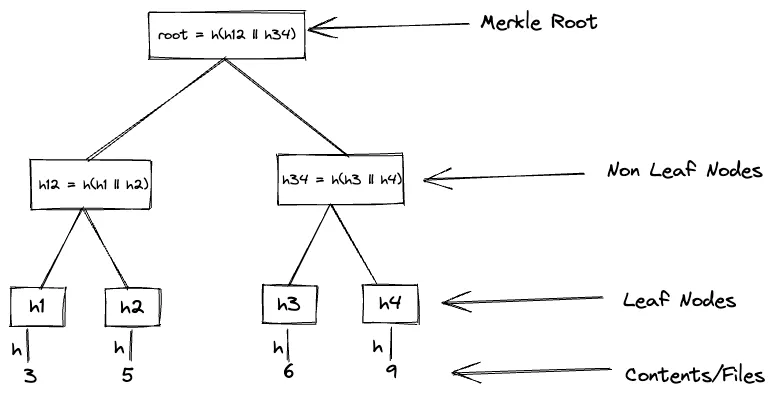
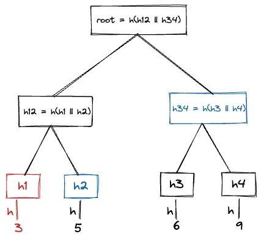
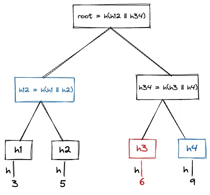
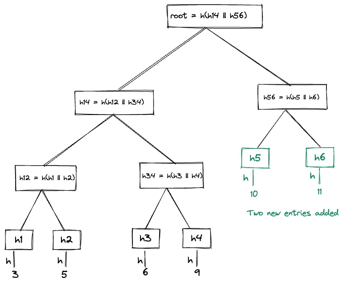
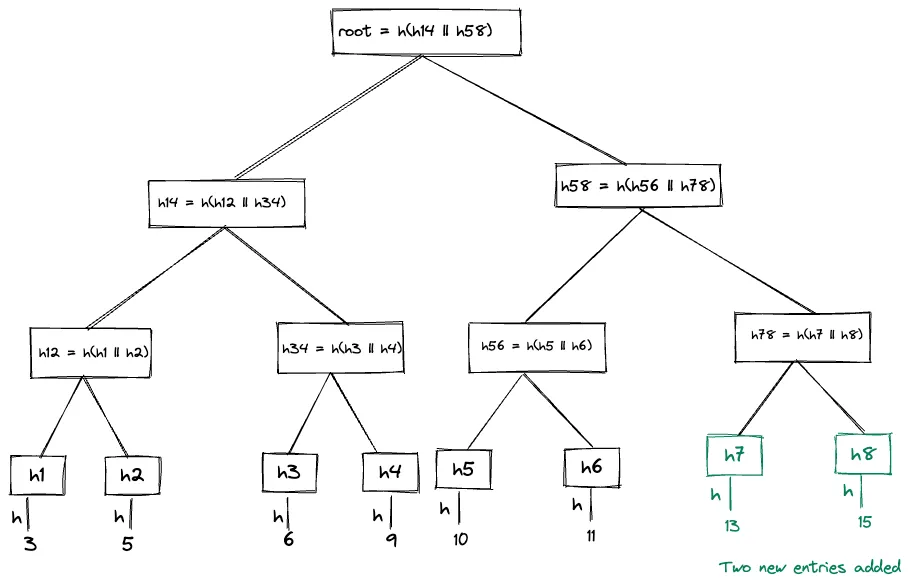

Merkle Tree and It’s Applications
A Merkle tree, also known as hash tree is a hash based data structure. It is a tree data structure in which each node leaf nodes are cryptographic hash of data blocks for example a file or set of files, and each non-leaf node is cryptographic hash on its children nodes. A hash tree allows efficient and secure verification of the contents of a large data structure.
Merkle trees are used in distributed systems for efficient data verification. Merkle tree uses hashes instead of full files or content for data verification which makes it efficient as it avoid transfer of large files for verification of the data.
Typically, a Merkle tree is implemented as a binary tree, means each node has at most 2 children nodes. Leaf nodes of the tree are hash of the actual content such as files, data blocks etc. Non-leaf nodes are hash of the concatenation of its two children nodes hashes.

[Merkle Hash Tree-1]
The hash function h is a one-way cryptographic hash function such as MD5 or SHA256 etc.
Building Merkle Tree Link to heading
Begin by building a tree in which leaves correspond to the ordered elements in the set, and have each leaf node contain the hash value of its element. Proceed up to the next level in the tree, creating internal nodes which correspond to the hash value of the concatenation of its children (maintaining their order). An internal node whose children are v1 and v2 will therefore have the value h(v1||v2) . Continue this process of building the higher levels in the tree until the root has been formed. This construction is referred to as a Merkle Hash Tree (MHT). The root hash is also known as Merkle root.
Merkle Audit Paths or Inclusion Proof Link to heading
A Merkle audit path for a leaf in a Merkle Hash Tree is the shortest list of additional nodes in the Merkle tree required to compute the Merkle Tree Hash for that tree. In other words, The Merkle audit Path is the missing node hashes required to compute all of the nodes between the leaf and the tree root. If the root hash you compute from the audit path matches the currently advertised Merkle tree hash for the log, then the leaf exists in the tree. This is used to verify if a leaf node exists in a Merkle tree or not.
In the above MHT, The Merkle audit path for leaf node 3 is [h2, h34]

If we use the nodes in audit path we can calculate the Merkle root. Using h2 and h1 (which is hash of 3 that we already know) we can get h12 . Now using h12 and h34 we can get root of the Merkle hash tree. If the calculated hash of the root and existing MHT hash are equal it means that 3 exists in the tree.
Merkle audit path for leaf node 6 is [h4, h12]

Consistency Proof Link to heading
A Merkle consistency proof lets you verify that any two versions of a Merkle hash tree are consistent: that is, the later version includes everything in the earlier version, in the same order, and all new entries come after the entries in the older version. Merkle consistency proofs prove the append only property of the tree.
If you can prove that a Merkle hash tree is consistent it means that no entries have been back-dated and inserted into the Merkle hash tree, no entries have been updated in the MHT, and the MHT has never been branched or forked.
For example, these two Merkle hash trees are built incrementally from the first tree above.

[Merkle Hash Tree-2]

[Merkle Hash Tree-3]
The consistency proof between Merkle hash tree 1 and Merkle hash tree 3 is [h78]. The Merkle has tree 3 can be verified using the h14 which is tree 1 (already given) and h78.
The consistency proof between Merkle hash tree 2 and Merkle hash tree 3 is [h14, h56, h78]. h14, h56 are used to verify Merkle hash tree 2, and h78 is additionally used to show hash is consistent with Merkle tree hash 3.
Features Link to heading
Some of the features of Merkle tree.
Efficiency Link to heading
In distributed and P2P systems data verification is very important because the same data exists in multiple locations. So, if a piece of data is changed in one location, it’s important that data is changed everywhere. Data verification is used to make sure data is the same everywhere.
However, it is time consuming and computationally very intensive to send the entire file or data for the verification in a distributed systems whenever a system wants to verify data. This is why Merkle trees are used. It basically limits the amount of the data being sent over a network by just sending the hash of the data or file instead of entire data or file. Plus, if an inconsistent piece of data is found, it’s much easier to insert a small chunk of fixed data than to completely rewrite the entire file to fix the issue.
Trust Link to heading
Merkle trees are useful in peer-to-peer systems is that they help you verify information, even if some of it come from an untrusted source (which is a concern in peer-to-peer systems). Before you download a file from a peer-to-peer source — like Tor — the root hash is obtained from a trusted source. After that, you can obtain lower nodes of the Merkle tree from untrusted peers. All of these nodes exist in the same tree-like structure described above, and they all are partial representations of the same data. The nodes from untrusted sources are checked against the trusted hash. If they match the trusted source (meaning they fit into the same Merkle tree), they are accepted and the process continues. If they are no good, they are discarded and searched for again from a different source.
Applications Link to heading
Merkle tree is used by many software systems. Some of it’s popular applications are as follows
Peer to Peer Network systems such as Tor, Bitcoin, Ethereum etc Link to heading
In P2P systems data verification is very important because the same data exists in multiple locations. So, if a piece of data is changed in one location, it’s important that data is changed everywhere. Data verification is used to make sure data is the same everywhere.
Merkle tree makes this data verification efficient because they use hashes instead of full files or data. Hashes are ways of encoding files that are much smaller than the actual file itself.
For example,
In bitcoin’s blockchain , a block of transactions is run through an algorithm to generate a hash, which is a string of numbers and letters that can be used to verify that a given set of data is the same as the original set of transactions, but not to obtain the original set of transactions.
The Merkle tree is useful because it allows users to verify a specific transaction without downloading the whole blockchain (over 445 gigabytes at the time of writing this blog).
Distributed Database systems such as DynamoDB, Riak, Cassandra Link to heading
Distributed database systems uses Merkle tree to implement replica synchronisation (anti-entropy) protocol to keep the replicas synchronised. Merkle tree helps to detect the inconsistencies between replicas faster, minimise the amount of transferred data and reduce the number of disk reads performed during the replica synchronisation process. For example, Cassandra replica synchronisation works as follows
A node initiates the replica synchronisation process, also known as initiating node. Each participating nodes for a replica builds its own Merkle hash tree and shares with the initiating nodes. The initiating nodes compares every tree to every other tree. If a difference is detected, the differing nodes exchange data for the conflicting range(s), and the old data is replaced with new data. The comparison begins with the top node of the Merkle tree. If no difference is detected, the process proceeds to the left child node and compares and then the right child node. When a node is found to differ, inconsistent data exists for the range that pertains to that node. All data that corresponds to the leaves below that Merkle tree node will be replaced with new data.
Read more about Cassandra anti-entropy feature here
Certificate Transparency Link to heading
Certificate transparency aims to mitigate the problem of mis issued certificates by providing publicly auditable, append-only, untrusted logs of all issued certificates. The logs are publicly auditable so that it is possible for anyone to verify the correctness of each log and to monitor when new certificates are added to it.
Each log consists of certificate chains, which can be submitted by anyone. It is expected that public CAs will contribute all their newly issued certificates to one or more logs; it is also expected that certificate holders will contribute their own certificate chains.
Merkle trees as used to maintain logs. The append-only property of each log is technically achieved using Merkle Trees, which can be used to show that any particular version of the log is a superset of any particular previous version. Likewise, Merkle Trees avoid the need to blindly trust logs: if a log attempts to show different things to different people, this can be efficiently detected by comparing tree roots and consistency proofs.
Learn more about Certificate Transparency and how it works from RFC6962 and https://certificate.transparency.dev/
I have implemented a Merkle tree which uses SHA256 as a hash function.
https://github.com/viveksyngh/merkletree
References: